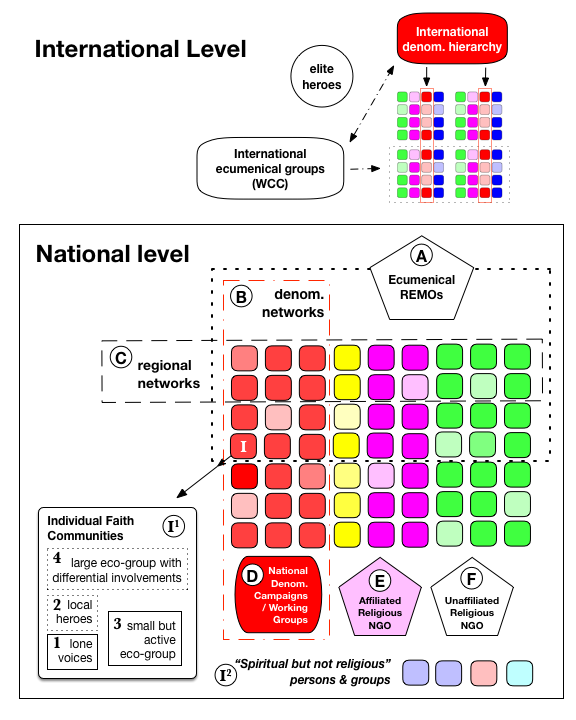
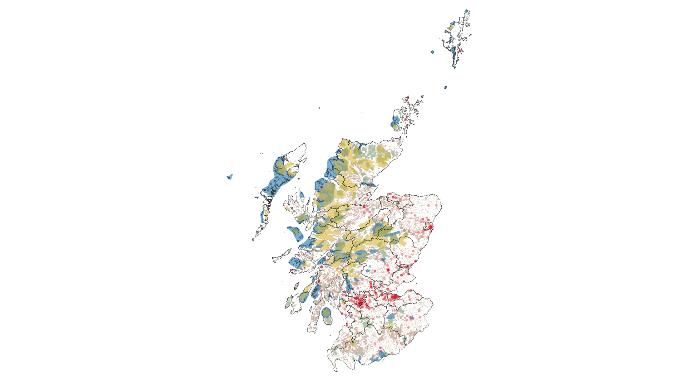

class: center, middle text-shadow: 2px 2px #ff0000 background-image: url(images/dots_transparent.png) .xxlargetext[Slowly and quietly we go] .xlargetext[Christian Environmentalism in the UK] .mediumtext[002019 March 27] .largetext[Jeremy Kidwell] .mediumtext[University of Birmingham] .mediumtext[*School of Philosophy, Theology and Religion*] .smalltext[*Note: this presentation is a website, you can view it here: http://bit.ly/nott2019*] .footnote[Email: [j.kidwell@bham.ac.uk](mailto:j.kidwell@bham.ac.uk) • Twitter [@kidwellj](https://twitter.com/kidwellj)] --- As a scholar one of my primary preoccupations is: What are we to do about climate change? --- As one of the most significant scientific collaborations in modern history, the [IPCC](https://en.wikipedia.org/wiki/Intergovernmental_Panel_on_Climate_Change) (Intergovernmental Panel on Climate Change) has been the source of some truly stunning achievements: - Working Group I Report, The Physical Science Basis - authored by 258 experts, includes 1,400,000 words, 2000+ pages, 9,200 citations. - Working Group II Report, Impacts, Adaptation and Vulnerability - 302 experts - Working Group III Report - 271 experts = 800+ experts (from 3000 nominations) That's a **lot** of experts! --- However, one consequence of the driving of climate change mitigation by scientists (and political scientists?) is that the framing of social interventions on climate change have been “decoupled from the social and political contexts of its material production and cognitive understanding” .red[*] .footnote[.red[*] Brace and Geoghegan, 2010 (see below for reference).] --- As a result policy solutions tend to be technocratic, value-free, etc. and fail to integrate the human cultures in which the drivers of climate change are incubated. There have been four interwoven attempts to address the "culture vacuum" surrounding climate change mitigation. --- (1) ### Scientists have begun to hone their skills in the dark arts of ".red[science communication]" --- (2) ### Since the 1990s, there has been an ongoing effort to re-integrate the [".red[human dimension]"](https://en.wikipedia.org/wiki/International_Human_Dimensions_Programme) in charting policy responses to environmental change. --- (3) ### Scholars like Brace and Geoghegan have argued for the inclusion of ".red[lay knowledge]" as part of the process of climate change research, policy design and execution. .red[*] This represents a change in research orientation: not starting with “what are you doing about climate change” but rather with “how are you experiencing climate change”? .footnote[.red[*] Catherine Brace and Hilary Geoghegan, “Human geographies of climate change: Landscape, temporality, and lay knowledges,” Progress in Human Geography 3 (2010): 284-302. https://doi.org/10.1177/0309132510376259. See also the recent article by Kaden, Jones, Catto, and Elsdon-Baker, "[Disentangling Lay and Professional Perspectives on Science and Religion](http://journals.sagepub.com/doi/pdf/10.1177/0008429817741448)"] --- (4) ### Political leaders have (more recently) begun to call directly on religious communities to express .red[moral leadership]: .left-column[ > "Saving the Earth and its peoples from dangerous climate change is an economic, social and environmental issue – and a moral and ethical one too that goes to the core of many if not all of the world's greatest faiths... Religious institutions need to find their voice and set their moral compass on one of the great humanitarian issues of our time” -UN Climate Chief Christiana Figueres (2014) ] .right-column[<img style="width:100%;margin-top:-1em;" src="https://upload.wikimedia.org/wikipedia/commons/thumb/9/91/Christiana_Figueres_Bonn_Climate_Change_Conference_May_2012_crop.jpg/440px-Christiana_Figueres_Bonn_Climate_Change_Conference_May_2012_crop.jpg">] --- .left-column[ ### Religious leaders have responded! - Pope Francis, Laudato si' (24 May 2015) - Islamic Declaration on Global Climate Change (August 2015) - For more: http://fore.yale.edu/climate-change/statements-from-world-religions/ ] .right-column[<img style="width:100%;margin-top:-1em;" src="https://upload.wikimedia.org/wikipedia/commons/thumb/4/4d/Franciscus_in_2015.jpg/453px-Franciscus_in_2015.jpg">] --- class: center, middle ...and political leaders have begun to acknowledge the importance of religious people to mitigation strategies. --- class: center, middle This confluence of "interests" presents an interesting opportunity and a research challenge. --- class: center, middle In essence, we've moved from *"Are religious _____ (fill in the blank) any different from non-religious ____ on environmentalism?"* to: *"How can we integrate religious people (and especially Christians) into environmental policy?"* ??? For decades social scientists have been trying to answer this question with some pretty blunt instruments, using some pretty tired questions. --- class: middle But we are confronted by the legacies of 20th century analysis and framing: 1. Policymakers do not understand how Christians are engaging with environmental issues 2. Scholars do not understand how Christians are engaging with environmental issues 3. Christians do not understand how Christians are engaging with environmental issues --- class: middle My approach: establish an **integrative scholarly field** in engagement with policymakers, scholars, and churches. - Eco-theology has struggled to engage with mainstream Christian scholarly reflection - Executives can tend to privilege social psychology and economics over anthropology (e.g. "bar charts" over "lived experience") - Social scientists have reinforced rather than questioned stereotypes about Christainity - Political leadership lacks literacy about religion in Britain .footnote[.red[*] Note: secular policymakers and scholars are waking up to the significance of religion and spiritual values. For more on this, see my [Cambridge presentation](https://jeremykidwell.info/files/presentations/presentation_20180130_cambridge_energy.html) and read our paper on "Religion and social values for sustainability" in [Sustainability Science](https://jeremykidwell.info/publications/2019_religion_social_values/) just out this year.] --- class: middle ## My work involves: - Working with theological reflection, ethnography of religious environmentalism and data science. - This is *theologically* informed study of Christian environmentalists flowing into a conversation with geographers, policical scientists, anthropologists, sociologists, economists. - Communicate this research to public policy audience, third sector, and Christian communities. Note: *readable executive summary of my research can be found here*: http://bit.ly/eco-research-summary --- ## Data: - 4 year study of Eco-Congregation Scotland (2013-2016) with interdisciplinary team - Theology & Extinction (2017-2019) research network - Spiritual Landscapes (fieldwork: 2019-2023) - Mapping Environmental Action (2013-) - On-going research collaborations with: A'Rocha, Eco-Congregation Scotland, RSPB, Development Trust Assoc. Scotland, Transition Network, Ecolise.eu, Permaculture Association, C of E, Methodist church, Earth Ministry (USA), and a few more. --- ## Eco-Congregation Study: - Key question: Do Christians engage with the issue of climate change differently from secular env. groups? - 44 eco-Congregations (over 50 interviews) - Comparator interviews with Transition Scotland groups - Analysis of 200+ applications to ECS (2005-2014) - Worked as an ECS award assessor - Participant observation in network events, analysis of websites, social networks - Board member of Stop Climate Chaos (2015-2017), interviews with elite NGO actors - GIS-based analysis of eco-group sites --- ## Follow-on research: - Working with other Environmental NGOs, religious + secular (e.g. elite interviews and observation) - Opening up ethnographic engagement with neo-pagan environmentalists --- class: center, middle # Some key findings --- class: center, middle 1. Eco-Theo citizenship 2. Scalar issues 3. Wilderness proximity, social demographics --- class: center, middle 1. Eco-Theo citizenship --- class: center, middle ## Finding 1: Christians are modest about their achievements > "To me, Christianity is about getting on doing all this stuff just because that's what you do. You don't go and say, ‘Oh, look what we're doing,’ ‘aren't we clever’ sort of thing. We're doing this, we're doing that, and we do the next thing. And so you sort of fade into the background ... the church is in fact working away and car- ing for its people." --- Review of ~200 ECS Applications, % who indicated activity as part of their work - Energy efficiency 79% - Waste or litter management or recycling 78% - Links made with development NGO (SCIAF, Oxfam, Christian Aid, Fair Trade) 69% - Gardening project 42% - Sought funding or audit for external funding for energy efficiency/renewable energy project (e.g. Climate Challenge Fund, European grant) 33% - Engaged in some form of direct political action (mailing, contacted MSP/MP etc.) 30% - Activity focus on animals or wilderness 29% - Practical action for “neighbour care” (free meals, outreach, etc.) 28% - Links made with secular environmental NGOs (e.g. Friends of the Earth) 26% - Food production, growing, or ethical sourcing 8% - Solar or wind energy project 6% .footnote[See Geo, p.9 for more] --- class: middle ## Issues are not the driver Whereas for national networks and campaigning organisations, "action" and "issues" can often serve as the main driver. In contrast, with community groups, the opposite is often the case. Groups are driven by community formation and support, and issues come afterwards..red[*] .footnote[.red[*] For more on this, check out ["Christian climate care: Slow change, modesty, and eco-theo-citizenship"](https://jeremykidwell.info/publications/2018_geo/) - hot off the press in 2018.] --- class: middle ### Possible consequences: - Possibly lower ambition re: grants and projects - Hidden achievements - Self-description (and public opinion) is dampened - Comparison to other groups is often negative - Work by Christians working in other contexts (FOE, Green Peace, community agriculture, etc.) may be ascribed to other secular groups --- class: middle ## This isn't completely straight-forward: - Multiple belongings - Tension between "citizenship" and politically engaged action > "It [climate change] is a serious issue and we owe it to our children and grandchildren to be sensible and not be burning lights all the time ... we all have to be conscious of these things" > "Ecology is a social justice issue. I don't think – not quite yet at least – people have, in church, just really caught onto that. I think once they have, that'll be quite a big deal." --- class: center, middle ## Finding 2: Eco-active Christians work slowly > "I think there's an awful lot that's changed since I came, but it's gradual and it's slow – far slower than I would have wanted it, but maybe the only effective way is to take it slowly." --- ## Policy take-away: churches can serve as a place for niche & experimentation .right-column[Specific policy interventions can be helped by a "proof of concept" Smaller community groups can help to form a "niche" which can serve as laboratories for testing out new ideas.red[*]] .footnote[.red[*] For more on this, check out: René Kemp, Johan Schot & Remco Hoogma, 1998. "[Regime shifts to sustainability through processes of niche formation: the approach of strategic niche management](https://www.tandfonline.com/doi/abs/10.1080/09537329808524310)." Technology Analysis & Strategic Management, vol. 10, iss. 2, pp. 175–198. For an overview of research into sustainability transitions see: Jochen Markard, Rob Raven & Bernhard Truffer, 2012. ["Sustainability transitions: an emerging field of research and its prospects"](https://www.sciencedirect.com/science/article/pii/S004873331200056X). Res. Policy 41 (6), 955–967.] .left-column[<img style="width:70%;margin-top:-1em;" src="https://www.artsfwd.org/wp-content/uploads/2016/01/IMG_2188-1-427x640.jpg">] --- class: center, middle (2) Scalar issues --- class: middle Put simply: Religious environmentalism iterates at multiple levels. The results are not predictable.  --- ## Quick example 1: ### There are **four different types** of *community environmental group* at the grassroots: - The **.red[lone voices]**: a single person working in the midst of either indifference or hostility in the wider community. - The **.red[local heroes]**: as above but with sanction and/or indirect support by the wider community. - **.red[Small but active]**: a small and generally self-contained group of 3-12 persons. - Large with differential involvements (**.red[LDI]**): many people with varying levels of participation. --- ## Quick example 2: # Denominations? Denominations are not always the most meaningful divisions. *At the level of .red[community and region], orientations towards environmental action may coalesce around local community concerns and/or .red[denominational structure].* Put another way, we may find that Christian Eco-Groups cluster in two genres: - Cluster 1: churches which are hierarchical/bureaucratic (CofE, CofS, RC, Methodist, etc.) - Cluster 2: churches which lack formal meta-organisationsal structure (Quaker, evangelical, baptist, etc.) - Networks (ECS, Green Christian, etc.) tend to neglect cluster 2 - Hebridean example --- class: middle .left-column[ ## Policy implications: - Churches are embedded in multiple overlapping networks, providing (unqiue) access to some - Authority is not distributed in a straight-forward way - There are multiple intermediate actors at both national and regional levels - multiple points of access ] .right-column[] --- ## (3) Mapping REMOs in Scotland  --- <table class="table table-striped table-hover table-condensed table-responsive" style="margin-left: auto; margin-right: auto;"> <caption>Group counts within Wildland Areas</caption> <thead> <tr> <th style="text-align:left;"> </th> <th style="text-align:right;"> Within Wildland Areas </th> <th style="text-align:right;"> ...50m </th> <th style="text-align:right;"> ...500m </th> <th style="text-align:right;"> % Within wildlands </th> <th style="text-align:right;"> % within 50m </th> <th style="text-align:right;"> % within 500m </th> </tr> </thead> <tbody> <tr> <td style="text-align:left;"> ecs_wildland_row </td> <td style="text-align:right;"> 0 </td> <td style="text-align:right;"> 0 </td> <td style="text-align:right;"> 0 </td> <td style="text-align:right;"> 0.00 </td> <td style="text-align:right;"> 0.00 </td> <td style="text-align:right;"> 0.00 </td> </tr> <tr> <td style="text-align:left;"> pow_wildland_row </td> <td style="text-align:right;"> 0 </td> <td style="text-align:right;"> 0 </td> <td style="text-align:right;"> 6 </td> <td style="text-align:right;"> 0.00 </td> <td style="text-align:right;"> 0.00 </td> <td style="text-align:right;"> 0.0015 </td> </tr> <tr> <td style="text-align:left;"> dtas_wildland_row </td> <td style="text-align:right;"> 3 </td> <td style="text-align:right;"> 3 </td> <td style="text-align:right;"> 3 </td> <td style="text-align:right;"> 0.013 </td> <td style="text-align:right;"> 0.013 </td> <td style="text-align:right;"> 0.013 </td> </tr> <tr> <td style="text-align:left;"> transition_wildland_row </td> <td style="text-align:right;"> 0 </td> <td style="text-align:right;"> 0 </td> <td style="text-align:right;"> 0 </td> <td style="text-align:right;"> 0.00 </td> <td style="text-align:right;"> 0.00 </td> <td style="text-align:right;"> 0.00 </td> </tr> <tr> <td style="text-align:left;"> permaculture_wildland_row </td> <td style="text-align:right;"> 0 </td> <td style="text-align:right;"> 0 </td> <td style="text-align:right;"> 0 </td> <td style="text-align:right;"> 0.00 </td> <td style="text-align:right;"> 0.00 </td> <td style="text-align:right;"> 0.00 </td> </tr> </tbody> </table> --- <table class="table table-striped table-hover table-condensed table-responsive" style="margin-left: auto; margin-right: auto;"> <caption>Group counts within SSSIs</caption> <thead> <tr> <th style="text-align:left;"> </th> <th style="text-align:right;"> Within SSSIs </th> <th style="text-align:right;"> ...50m </th> <th style="text-align:right;"> ...500m </th> <th style="text-align:right;"> % Within SSSIs </th> <th style="text-align:right;"> % within 50m </th> <th style="text-align:right;"> % within 500m </th> </tr> </thead> <tbody> <tr> <td style="text-align:left;"> ecs_sssi_row </td> <td style="text-align:right;"> 0 </td> <td style="text-align:right;"> 3 </td> <td style="text-align:right;"> 59 </td> <td style="text-align:right;"> 0.00 </td> <td style="text-align:right;"> 0.01 </td> <td style="text-align:right;"> 0.17 </td> </tr> <tr> <td style="text-align:left;"> pow_sssi_row </td> <td style="text-align:right;"> 7 </td> <td style="text-align:right;"> 62 </td> <td style="text-align:right;"> 610 </td> <td style="text-align:right;"> 0.01 </td> <td style="text-align:right;"> 0.02 </td> <td style="text-align:right;"> 0.15 </td> </tr> <tr> <td style="text-align:left;"> dtas_sssi_row </td> <td style="text-align:right;"> 7 </td> <td style="text-align:right;"> 11 </td> <td style="text-align:right;"> 49 </td> <td style="text-align:right;"> 0.03 </td> <td style="text-align:right;"> 0.05 </td> <td style="text-align:right;"> 0.21 </td> </tr> <tr> <td style="text-align:left;"> transition_sssi_row </td> <td style="text-align:right;"> 0 </td> <td style="text-align:right;"> 1 </td> <td style="text-align:right;"> 17 </td> <td style="text-align:right;"> 0.00 </td> <td style="text-align:right;"> 0.01 </td> <td style="text-align:right;"> 0.18 </td> </tr> <tr> <td style="text-align:left;"> permaculture_sssi_row </td> <td style="text-align:right;"> 0 </td> <td style="text-align:right;"> 0 </td> <td style="text-align:right;"> 3 </td> <td style="text-align:right;"> 0.00 </td> <td style="text-align:right;"> 0.00 </td> <td style="text-align:right;"> 0.21 </td> </tr> </tbody> </table> <table class="table table-striped table-hover table-condensed table-responsive" style="margin-left: auto; margin-right: auto;"> <caption>Group counts within woodlands</caption> <thead> <tr> <th style="text-align:left;"> </th> <th style="text-align:right;"> Within Woodlands </th> <th style="text-align:right;"> ...50m </th> <th style="text-align:right;"> ...500m </th> <th style="text-align:right;"> % Within Woodlands </th> <th style="text-align:right;"> % within 50m </th> <th style="text-align:right;"> % within 500m </th> </tr> </thead> <tbody> <tr> <td style="text-align:left;"> ecs_forestinv_row </td> <td style="text-align:right;"> 1 </td> <td style="text-align:right;"> 51 </td> <td style="text-align:right;"> 287 </td> <td style="text-align:right;"> 0.01 </td> <td style="text-align:right;"> 0.15 </td> <td style="text-align:right;"> 0.84 </td> </tr> <tr> <td style="text-align:left;"> pow_forestinv_row </td> <td style="text-align:right;"> 52 </td> <td style="text-align:right;"> 752 </td> <td style="text-align:right;"> 3304 </td> <td style="text-align:right;"> 0.01 </td> <td style="text-align:right;"> 0.19 </td> <td style="text-align:right;"> 0.82 </td> </tr> <tr> <td style="text-align:left;"> dtas_forestinv_row </td> <td style="text-align:right;"> 11 </td> <td style="text-align:right;"> 38 </td> <td style="text-align:right;"> 172 </td> <td style="text-align:right;"> 0.05 </td> <td style="text-align:right;"> 0.16 </td> <td style="text-align:right;"> 0.74 </td> </tr> <tr> <td style="text-align:left;"> transition_forestinv_row </td> <td style="text-align:right;"> 2 </td> <td style="text-align:right;"> 12 </td> <td style="text-align:right;"> 77 </td> <td style="text-align:right;"> 0.02 </td> <td style="text-align:right;"> 0.13 </td> <td style="text-align:right;"> 0.81 </td> </tr> <tr> <td style="text-align:left;"> permaculture_forestinv_row </td> <td style="text-align:right;"> 2 </td> <td style="text-align:right;"> 6 </td> <td style="text-align:right;"> 13 </td> <td style="text-align:right;"> 0.14 </td> <td style="text-align:right;"> 0.43 </td> <td style="text-align:right;"> 0.93 </td> </tr> </tbody> </table> --- Any questions? ---